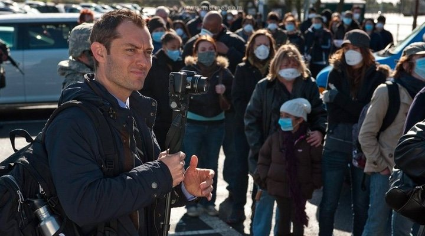

NOTICIAS DE CINE Y SERIES
El cine después del coronavirus
El mundo sigue esperando esa luz al final del túnel que nos permita regresar, en mayor o menor
medida, a nuestra vida normal y a nuestras calles. ¿Te acuerdas de esa última vez que fuiste al
cine
antes de que el coronavirus los cerrara? Seguro que has visto un montón de películas y series en
el
tiempo que llevamos confinados. Pero a lo mejor eres de esos que está deseando volver a sentarte
en
una butaca y disfrutar del cine en pantalla grande.Todavía no sabemos cuándo volverán a
abrir
sus puertas las salas de cine, ni en qué condiciones lo harán. Se esperan cambios importantes
para
garantizar la seguridad del personal y de los espectadores, pero de momento, sin una fecha
concreta,
tampoco hay anuncios específicos por parte de las empresas. Tampoco sabemos con qué películas
volverán a abrir, dado que los principales estrenos han movido su fecha de lanzamiento a verano
o
más allá. ¿Se optará por el reestreno de éxitos pasados, o será un regreso a medio gas hasta que
podamos volver en serio a la normalidad?.
Es mejor para tu salud mental que veas 'Contagio' a que pongas los informativos,
según una
psicóloga

Aunque ya tenemos bastantes preocupaciones a raíz de la pandemia de coronavirus que afecta a casi
todos los ámbitos de nuestra vida, no podemos olvidarnos de nuestra salud mental. El
confinamiento o
la incertidumbre de cuándo terminará y podremos recuperar nuestra vida normal (o al menos gran
parte
de ella) pueden afectar mucho a nuestro estado de ánimo y a nuestra cabeza. ¿Qué medidas podemos
tomar para reducir esa carga negativa hacia el cerebro? Sorprendentemente, ponernos
'Contagio'. La doctora Pamela Rutledge, directora del Media Psychology
Research Center, ha explicado a Insider que las películas sobre pandemias en realidad pueden
hacer
bastante bien a nuestra salud mental, sobre todo porque ofrecen una cosa muy importante que la
realidad de momento no nos puede dar: un cierre. "Nos hace sentir que no estamos solos, y que
hay
una resolución para estas historias así que podemos expresar nuestra ansiedad de esa manera. Ya
sea
con películas zombies o con 'Contagio', cualquier thriller aumenta mucho la ansiedad y el miedo
que
luego son resueltos al final", explica la psicóloga.
¿Cuándo se estrenará Mulán en Argentina?
La versión live-action de Mulán fue uno de los tantos estrenos afectados por la pandemia de
coronavirus. La película originalmente iba a estrenarse el 26 de marzo en Argentina. Disney
esta
semana informo que la nueva fecha de estreno será para el 23 de julio, dentro del período de
vacaciones de invierno de este año. De ser asi, Mulán compartirá la cartelera junto a
Tenet de
Christopher Nolan que también se estrenaría ese dia.
'Doctor Strange 2', 'Thor: Love and Thunder' y las secuelas de 'Spider-Man' ya
tienen nuevas
fechas
de estreno
Debido al coronavirus, muchos estrenos, tanto cinéfilos como seriéfilos, se han visto afectados
ya
sea por tener que paralizar su rodaje o por tener que empezarlo mucho más tarde de lo planeado.
Sin
embargo, Sony y Marvel han anunciado las nuevas fechas de estreno de varias de sus
películas. La
secuela de Spider-Man:
Homecoming se ha retrasado del 16 de julio de 2020 al 5 de noviembre de
2021.
Spider-Man: Un nuevo Universo 2 solo se ha atrasado unos pocos meses: del 8 de
abril de
2022 al 7 de octubre del mismo año. Por otro lado, Doctor Strange in the Multiverse of
Madness se estrenará finalmente el 25 de marzo de 2022 en vez de hacerlo el 5 de
noviembre de 2021. Y por último, Thor: Love and Thunder de Taika Waititi sólo se ha
atrasado
unos pocos días: del 11 de febrero de 2022 al 18 de febrero del mismo año. Otras de las
películas
que se ha visto afectada por el coronavirus ha sido Uncharted con Tom Holland, que se estrenará
finalmente el 8 de octubre de 2021 en vez de hacerlo el 16 del mismo año.